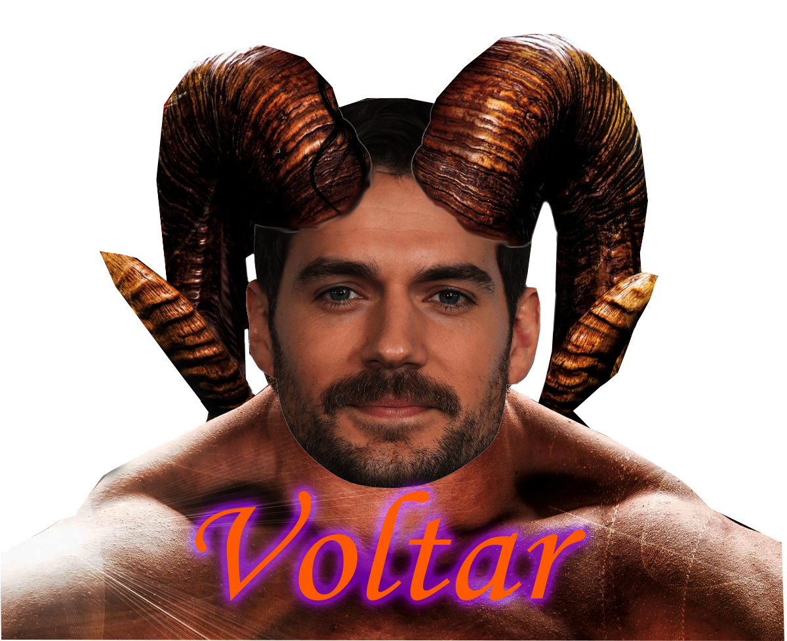
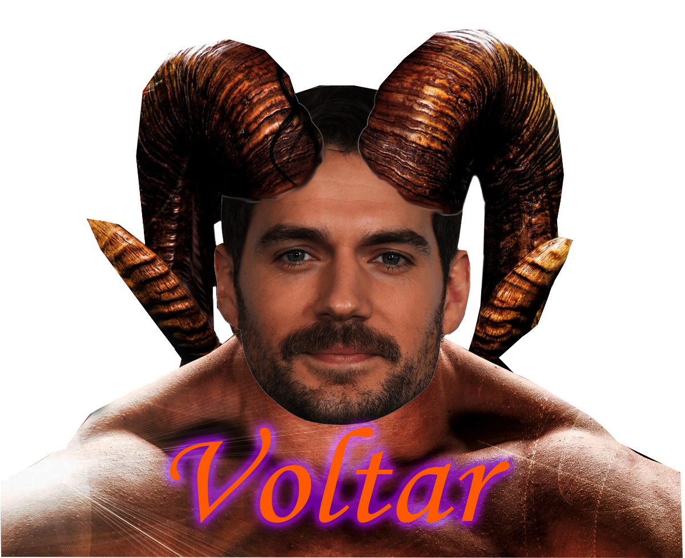

Sátiro
O bode de muletas
Hoje vamos falar sobre sátiros e faunos. A mitologia grega é cheia de figuras míticas que permeiam o imaginário das pessoas e fazem parte de lendas mágicas e muito interessantes.
Sem dúvida, nesses mitos podemos encontrar muitas figuras interessantes e até mesmo surpreendentes.
Dentre estes muitos personagens estão os sátiros e os faunos que são muito confundidos na cultura popular. Essa confusão acontece porque ambos estão relacionados ao culto do deus do vinho, Baco ou Dionísio.
Para ficar mais claro, é importante ressaltar que os sátiros da mitologia grega são seres da natureza que tem metade do corpo em forma humana e a outra metade em forma de bode, sendo, então, popularmente citados como as criaturas metade homem, metade bode. Esses seres são equivalentes aos faunos, da mitologia romana.
Sendo assim, vamos conhecer um pouco mais de cada uma dessas figuras da mitologia grega e entenda melhor sobre cada um deles.
Os sátiros da mitologia grega

Na mitologia dos povos da Grécia, os sátiros são considerados divindades menores da natureza. Eles possuem o aspecto físico de homens, porém com pernas, cauda e orelhas de bode ou cabrito.
Os sátiros, que são sempre figuras masculinas, também possuem chifres nas testas, os narizes achatados, barbas longas e lábios grossos.
Para eles, normalmente, era oferecido o pinho e a oliveira e, mesmo sendo seres divinos, eles não eram imortais.
Esses seres viviam nos bosques e nos campos e, frequentemente se relacionavam com as ninfas. As relações mais comuns eram com as Mênades, que se juntavam com eles para realizar o cortejo de Dionísio.
Além de Dionísio, que era o deus do vinho, os sátiros também acompanhavam Pã, que era o protetor dos pastores, dos bosques, dos rebanhos e campos.
Outra grande curiosidade sobre os sátiros na mitologia grega, é que eram seres de grande potência sexual. Justamente por isso eram retratados, muitas vezes, apresentando uma ereção.
 
